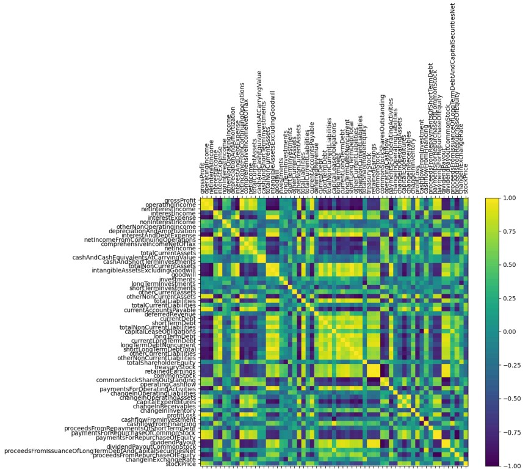

1. Stock Price Trends
We visualized historical stock prices of major tech companies to identify patterns and major events impacting the market.
import matplotlib.pyplot as plt
# Load data
df = pd.read_csv("tech_stock_prices.csv") # Pre-collected data of stock prices
df['Date'] = pd.to_datetime(df['Date'])
df.set_index('Date', inplace=True)
# Plot stock prices
plt.figure(figsize=(10, 6))
for company in ['Apple', 'Amazon', 'Microsoft', 'Google', 'Meta']:
plt.plot(df.index, df[company], label=company)
plt.title("Stock Price Trends (2000-2024)")
plt.xlabel("Year")
plt.ylabel("Stock Price (USD)")
plt.legend()
plt.show()
Explanation: Over time, stocks generally increased, with key moments of market corrections such as the 2008 financial crisis and 2014 stock splits by Apple and Google. The COVID-19 pandemic caused a temporary dip, but tech stocks rebounded quickly, and Amazon and Google experienced a significant dip in 2022 due to their 20-1 stock splits.
2. Sub-sector Performance
We compared the performance of e-commerce, cloud services, and telecommunications sub-sectors using aggregated sector data.
import seaborn as sns
# Pre-collected sub-sector data
sub_sector_df = pd.read_csv("sub_sector_performance.csv")
# Create a bar plot
plt.figure(figsize=(10, 6))
sns.barplot(data=sub_sector_df, x="Sub-sector", y="Average Growth (%)", palette="viridis")
plt.title("Average Growth by Sub-sector (2000-2024)")
plt.xlabel("Sub-sector")
plt.ylabel("Average Growth (%)")
plt.show()
Explanation: The analysis of stock performance in various technology sub-sectors reveals that factors like technological advancements and broader economic trends influence market outcomes. E-commerce companies experienced fluctuations, cloud computing firms thrived, while traditional telecom stocks faced challenges, with events like the smartphone boom and the 2020 pandemic significantly impacting sector performance.
3. Correlation with Currency Trends
Analyzed how foreign exchange rates influence US stock prices.
import numpy as np
# Calculate correlation matrix
fx_data = pd.read_csv("fx_rates.csv")
correlation_matrix = fx_data.corr()
# Plot correlation heatmap
plt.figure(figsize=(8, 6))
sns.heatmap(correlation_matrix, annot=True, cmap="coolwarm")
plt.title("Correlation Between Stock Prices and Currency Exchange Rates")
plt.show()
Explanation: The line plot between the S&P 500 and foreign exchange rates (USD/EUR, USD/CNY) reveals a positive correlation before the 2008 crisis, indicating US growth but with Europe outperforming. Post-crisis, the S&P 500 increased steadily, while USD/EUR and USD/CNY showed an inverse relationship, suggesting the US market was performing better than Europe and China, though foreign exchange rates seem to reflect global economic conditions rather than directly impacting the US stock market.
4. Regression Analysis
Applied Ridge Regression to assess the impact of financial indicators on IBM’s stock prices.
from sklearn.linear_model import RidgeCV
from sklearn.model_selection import train_test_split
from sklearn.preprocessing import StandardScaler
import matplotlib.pyplot as plt
# Load preprocessed financial data
df_financials = pd.read_csv("ibm_financials.csv")
# Split into training and test sets
X = df_financials.drop(columns=["stockPrice"])
y = df_financials["stockPrice"]
X_train, X_test, y_train, y_test = train_test_split(X, y, test_size=0.2, random_state=42)
# Standardize features
scaler = StandardScaler()
X_train_scaled = scaler.fit_transform(X_train)
X_test_scaled = scaler.transform(X_test)
# Perform Ridge Regression with Cross-Validation
ridge_cv = RidgeCV(alphas=np.logspace(-4, 4, 13), cv=5)
ridge_cv.fit(X_train_scaled, y_train)
# Plot MSE vs Alpha
plt.figure(figsize=(10, 6))
plt.plot(ridge_cv.alphas, ridge_cv.cv_values_.mean(axis=0), label='MSE vs Alpha')
plt.xscale('log')
plt.xlabel('Alpha')
plt.ylabel('Mean Squared Error')
plt.title('Ridge Regression: MSE vs Alpha')
plt.show()

First, we start by examining the correlation heatmap to understand how the different financial factors are related to each other. We can see from the heatmap which factors are strongly correlated with stock price, such as gross profit and total current liabilities, while others, like inventory changes and short-term debt, show weaker correlations.
Next, we address any collinearity issues before tuning the ridge regression model using the MSE vs. Alpha plot, which helps us find the optimal alpha value to balance model fit and avoid overfitting.
Finally, after optimizing the model, we are more confident that factors like investments, gross profit, and current liabilities are strong predictors of stock price, while operating liabilities and inventory changes have a negative impact.